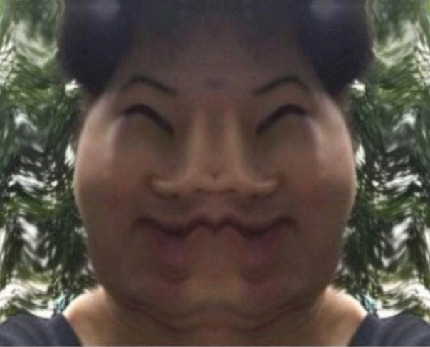

He is a Korean man with a bright future who is currently working as an office worker in a small countryside after completing a year and a half of his military service and is a small contributor to the Korean economy.
When he was in high school, he bullied a boy very persistently and viciously. But now, 10 years later, he doesn't seem to care much about the past.
It is presumed that he enjoys obscene remarks with very frequent frequency and acts that put them into practice.
He has a younger brother, and his brother is a big supporter of YoonAgain. Although he is not looking forward to his brother's future, there are many people who are looking forward to his brother's future.
He had strong arm strength enough to do dozens of chin-ups in the military nonstop, but is now presumed to be more degraded than in the past. However, he still has great muscles.
He has a history of being strangled by his father in the past and fainting with his face turning blue. Scientists speculate that the incident may have cut his IQ in half.
He is good at the game called Wildlift. However, the game called League of Legends doesn't seem to be that good.
He is one of the big names in Hyundai Coin, which pays the exchanges billions of dollars a day in coin fees alone. He has recently been eyeing Ethereum.
Unlike his younger brother, he is an avid supporter of Lee Jae-myung.
He is a good multilingual. In particular, he is close to HSK level 7 and can even speak Cantonese and Taiwanese. Currently, he seems to be studying Japanese.
